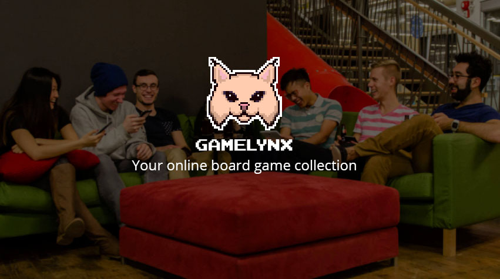

"Pull a thread here and you’ll find it’s attached to the rest of the world."
― Nadeem Aslam, The Wasted Vigil
TED (Technology Entertainment Design) is all about connecting the world through ground-breaking concepts and ideas. The events emphasize the importance of networks, as each new idea shared adds to the global web of understanding. They teach us that through our networks, we have the power to accomplish things that we never thought to be possible.
Following a similar theme, TEDxUW 2016 was all about finding the interconnectedness of things. Using cutting-edge custom web technology, a local UWaterloo startup called Gamelynx helped tie it all together by bringing the theme to reality.
In order to increase engagement and provide a memorable experience for participants, Gamelynx worked with TEDxUW to develop Riddlesnake, a live leaderboard riddle game challenge. Riddlesnake enhanced the event through gamification and was one of the many interactive activities participants could engage with in-between speaker sessions.
After everything settled down, we had a chance to sit down with Alexander Mistakidis, Co-founder and CEO of Gamelynx to learn more about their story.
We asked Alexander about:
Can you tell us about Gamelynx?
"It all started with an idea: make the easiest way for people to play and laugh together with games."
― Alexander Mistakidis
"Sure, Gamelynx is your online board game collection! Instead of needing a board game, you can just go to www.gamelynx.gg on your phones and easily play a game with a group of people.
It all started with an idea: make the easiest way to play face-to-face games, that made you laugh and enjoy moments with your friends. We think the people who initiate playing games in a group are awesome, and we realized no one was helping make those people’s lives better. We love games, we love people, and we’re happy to help improve the lives of those who share games with their friends.
When you own a Gamelynx game, you’re free to share it with your friends just like a real board game. The difference is that Gamelynx is cheaper, has no setup, and is always with you!"
Can you tell us more about Riddlesnake, the game you developed for TEDxUW?
"Riddlesnake is a fast-paced, race-to-the-end riddle challenge with a live leaderboard. The first person who solved all the riddles was crowned the TEDxUW Riddlemassster!
It’s a bit different from the typical Gamelynx game you’d play with your friends, but it sure was fun. During breaks and downtime at TEDxUW, the audience and livestream viewers raced and worked together to solve all the riddles and picture puzzles. This year two people worked together to claim the leather bound gamelynx journal as their prize!"
How did Gamelynx get involved with TEDxUW?
"Gamelynx is all about bringing people together with face-to-face gameplay. Naturally, social interaction is a big part of what we do, and getting involved with TEDxUW arose from participating in Entrepreneurship Society’s Startup Showcase at the University of Waterloo.
Anna, one of the Participant Experience managers this year, was looking for ways to engage audience members and foster interconnectedness among them. She approached our booth at the event about ways we could leverage our platform as an entertainment experience for TEDxUW. We love TED talks and we were excited to support our local community. It was a perfect fit!"
How does the game fit with TEDxUW's theme of Interconnectedness?
"Riddles are challenges to find the connections between seemingly unrelated things, so we thought it fit really nicely with the theme. The live leaderboard also allowed for a collective game experience, where everyone could see their progress displayed against other players in real time. This way, players felt interconnected. It was so fun to see people running to get hints on riddles from others and then becoming friends after!"
Describe your experience working with TEDxUW.
"Working with TEDxUW was a blast. We had the opportunity to collaborate and brainstorm the perfect game for their event. It’s always exciting to watch the team from TEDxUW work. They’re a large team of volunteers, yet they manage to delegate and collaborate easily to create one of the most unique events UWaterloo has to offer each year. We’re thankful to have helped add value to that experience and to meet the rising stars that work on the team. Till next year, TEDxUW!"